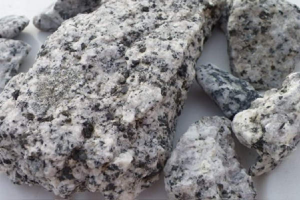
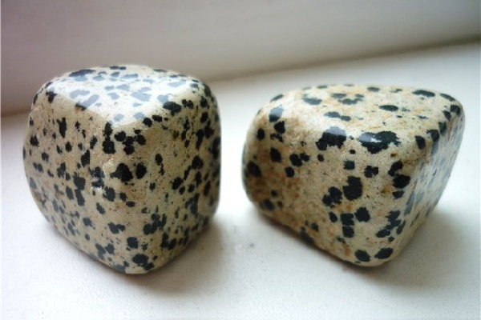
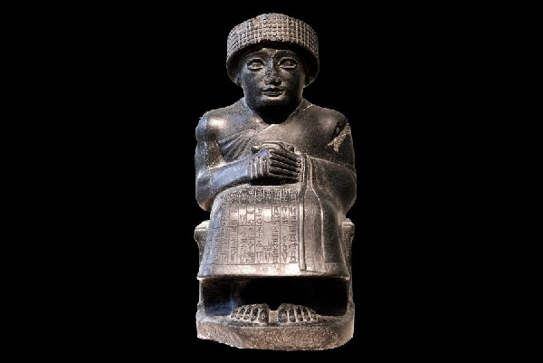

Lime
DIORITE
Diorit is a magmatic mountain sale ofmedium composition. Consists of andesineand several colored minerals.
Chemical composition:SiO2 56%, TiO2 1%, Al2O3 17%,Fe2O3 4%, FeO 4%, MgO 7%,CaO 6%, Na2O 4%, K2O 1%
The color of the deorite is usually black and white with a greenish tint.
Any form of diorite can take.
The deorite has such a benefit for a man,tools were made of him as well as statuesand sculptures.
Interesting facts about dioritis:(1) The statue of Gudea (the Sumerian ruler of the ancient Near East) is made of diorite.(2) Egyptian statues are also made of diorite.(3) Diorite is occasionally used as jewelry.



Author: Lime|DF
My Mail: dima3lime3lemon3@gmail.com